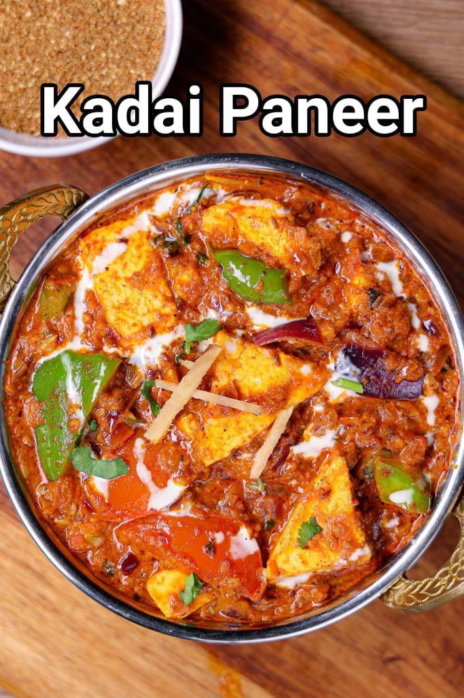

Kadai Paneer Recipe

Description
It is semi-dry curry made with paneer cubes, in a tomato onion
gravy with a blend of spices. In other words, Kadai paneer
is an extension of any paneer gravy with a special mix added
to the gravy. It can be a perfect gravy curry served especially
with the typical Indian flatbreads,but can also be a wonderful
side dish for flavored rice.
Ingredients
- For Kadai Masala
- 2 tbsp coriander seeds
- 2 tsp cumin
- 2 tsp fennel
- 3 dried red chilli
- 3 dried red chilli
- 2 tsp pepper
- For Sabzi
- 2 tbsp oil
- 2 tsp ghee
- 1 tsp cumin
- 5 cloves garlic, finely chopped
- 1 inch ginger, finely chopped
- 2 onion, finely chopped
- ½ tsp turmeric
- 1 tsp chilli powder
- 1 tbsp kadai masala
- 1 tsp salt
- 3 tomato, chopped
- 2 tbsp cream
- 1 tsp kasuri methi, crushed
- 2 tbsp coriander, chopped
- 1 inch ginger, julienne cut
- For Stir Fry
- 2 tsp oil
- onion
- capsicum
- tomato
- paneer
- 1 tsp garam masala
Steps
- Firstly, to prepare kadai masala, in a pan take 2 tbsp
coriander seeds, 2 tsp cumin, 2 tsp fennel, 3 dried
red chilli, 3 dried red chilli and 2 tsp pepper
- Dry roast on low flame until the spices turn aromatic
- Cool completely, and grind to a coarse powder.Kadai masala
is ready
- To prepare the sabzi,in a kadai heat 2 tbsp oil,2 tsp ghee
and saute 1 tsp cumin until it turns aromatic
- Now add 5 cloves garlic, 1 inch ginger, 2 onion and saute
until the onions turn golden brown
- Further keeping the flame low, add ½ tsp turmeric,
1 tsp chilli powder, 1 tbsp kadai masala, 1 tsp salt
- Saute on low flame until the spices turn aromatic
- Now add 3 tomato and saute until the tomato turn soft
and mushy
- Continue to cook until the oil separates from the sides
- Further, in a pan take 2 tsp oil. add onion, capsicum,
tomato, paneer and 1 tsp garam masala
- Stir fry on high flame until the vegetables turn crunchy
- Transfer the stir-fried vegetables, and add half a cup
of water
- Mix well and cook for 2 minutes
- Further add 2 tbsp cream, 1 tsp kasuri methi, crushed,
2 tbsp coriander and 1-inch ginger. Mix gently
- Finally, Kadai Paneer Recipe is ready to enjoy with roti
or naan